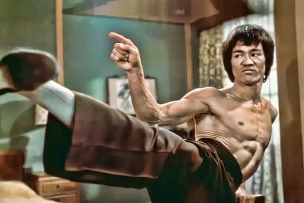
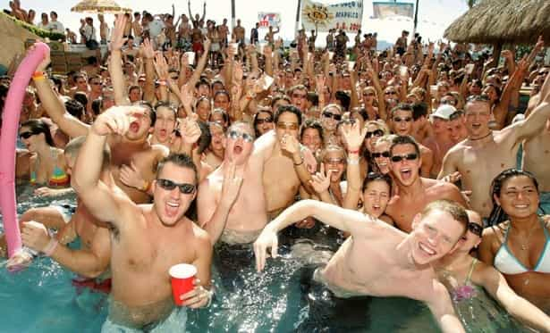

< < < Back
The Ultimate Guide To Muscle: Rest And Recovery – Return Of Kings
Well, you made it. Part 1 has you killing it in the gym maximizing your genetic potential. Part 2 has your body so fueled with good food your gains are massive bro! Part 3 has you saving a ton of money by supplementing SMART and with a plan.
That’s it I guess eh? Nothing else left to do. Here is the single, absolute, iron clad commandment of building muscle you MUST do.
Rest And Recovery
While I was never one to overtrain, I can honestly say that as a hardgainer, I was doing too much in the gym and not getting enough rest and recovery. All the proper nutrition and training in the world will do nothing if you do not give your body a good chance to rest and recover.
If you are in your 20s, this will be a lot less time than a guy like me now in my early 40s. This is also why if you are needing a nitric-oxide booster to give you energy in your workout, your low energy is not a need for supplementation, but rather a need for rest!
If you are not fresh, full of energy and ready to rip into the weights when you walk into the gym, you should turn around and go home.
The truth is, when it comes to training, all you need to do is lift just enough weight to overload your muscle to exhaust it completely. That is enough. Once you have exhausted the muscle, any further training PAST exhaustion is just continual damage to the muscle in question. Do this long enough over a long enough time line and you will not only not grow, you might just shrink!
Your body is your number one indicator of progress and whether you should be training that day or not. Are you gaining weight? Is DOMS—delayed onset muscle soreness—a distant memory for you now? Do you keep adding another 5, or maybe even 10 or 20 lbs, on the bar to your previous lift every time you return to the bench or squat rack?
If this is you, you are getting enough rest and recovery. Unless your training goal is maintenance of what you have built, you should always be striving for more weight on the bar for more reps, every time. If that is not happening, and you are eating and training right, you need to step back and take a rest.
Resting, taking a break, may be the only thing you need to do in order to break through a training plateau.

For you young guys in your 20s, this is going to be the hardest part of advice to hear in this series:
You are not getting enough sleep.
Science is proving beyond a shadow of a doubt just how bad the Western approach to sleep and rest are for human health and functioning. While I can’t find the reference right now, I remember reading somewhere that every hour of sleep you get before 10 pm is equal to 2 hours of sleep after it.
I started to go to bed by 9 or 9:30 pm in order to get up at 5 am for work. I found not only was I able to get up easier, but I had more energy for the entire day. I actually felt rested. When it comes to building muscle, the vast majority of advice is on nutrition and training, but no one mentions that all of your eating and working out only bears fruit while you are sleeping!
Are you working out three times a week? Four times a week? Eating five meals a day? Supplementing properly? Leaving the gym exhausted? Then why are you staying up until 12 or 1 am watching Netflix? Why are you getting drunk on the weekends and staying out until 3 or 4 am?

Yes, yes… I hear you screaming. You are in your 20s, your body can “handle it.” I am here to tell you it cannot. It will not. And living this life will take a toll not just on your efforts in the gym, but on your overall health and masculine vitality.
True Story
I was talking to a coat check girl at a popular club I frequented and in chatting her up, she just happened to drop a very common question for a lady in her early 20s talking to someone she believed was around her age.
“So, what are you studying at school?”
I was like…. “What studying? What do you mean?”
She was… “You know… university. Your courses? What are you taking?”
I had to smile. I said to her “I am not studying anything. I am not in university.”
To which she immediately replied “What? Really? How old are you?”
It is natural I guess to assume someone who looks similar to your age would be doing the same thing you are, going to university and studying for a career. What surprised me was the immediate request for my age when she found out I may NOT be as young as she was. My not being in university, and this implying I am PAST that stage of life, surprised her.
I asked her to guess. I always do now because the responses are so freaking hilarious. She was about 5 to 7 years off if I remember and when I told her my real age (28 at the time) this was her exact response, word for word…
“Really. Wow. You’ve got good genes. Your daughters will thank you.”
Thinking back on that time now, it was not good genes, it was simply clean living. No drugs. No alcohol. No smoking. Plenty of sleep. Good diet and exercise. I am now in my 40s and when shaven and clean cut, I can easily pass for my very early 30s and women still routinely guess a minimum of five, sometimes a full decade, younger than my real age.
I digress for a minute here to try and pass on a life lesson most men, 99% of them, never want to hear. The key to a truly masculine and manly presence well into your advanced years is clean living. You don’t need the alcohol to loosen up and socialize. Staying up late to party your entire 20s WILL shorten your lifespan and degrade your looks.
I did not have much luck with women in my 20s. Now in my 40s, and continually shocked and surprised by the reaction young women get to my presence when they meet me, I would not trade one second of my life now for more success with women when I was younger or to have “partied” late and hard in my youth chasing after them.
Start getting some good rest. Go to bed consistently, even on weekends. That does not mean never go out again to party or leave a party at 9pm because you gotta be in bed (although if you are seriously training, you might just have to because your body demands it).
Don’t take my word for it. Just look around you at guys older than you. How many older men do you meet in your life that actually look their age, and not 5 to 10 years older (or more) than they are?
Conclusion
I want to thank you for reading this four part series on building muscle. I have reached a stage in my life where I want to share what I have learned and pass on what I can to a younger generation. Your forties should be celebrated, whether you succeed in the grand ambitions you set for yourself, or are reduced to humble circumstances by fate.
Struggle is the meaning of Life
defeat or victory is in the hands of God
but struggle itself is one’s duty and
should be one’s joy
This was kanji in a framed print on my sensei’s wall. This series on building muscle lacked specifics for a reason. I don’t want to give you my prescription for building muscle. I want to give you the foundation you need to figure out how to build muscle for yourself. For your body and your unique genetic potential to achieve.
Thank you for reading. Strength and honor.
Read More: The Top 3 Muscle Building Mistakes Men Make